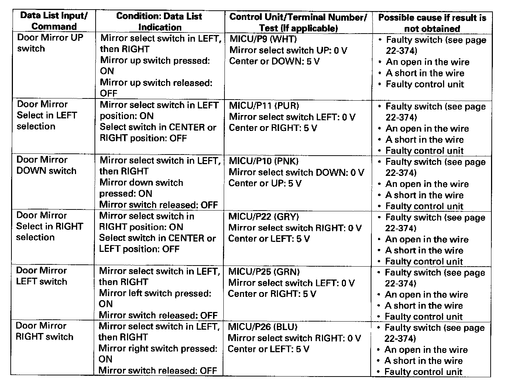
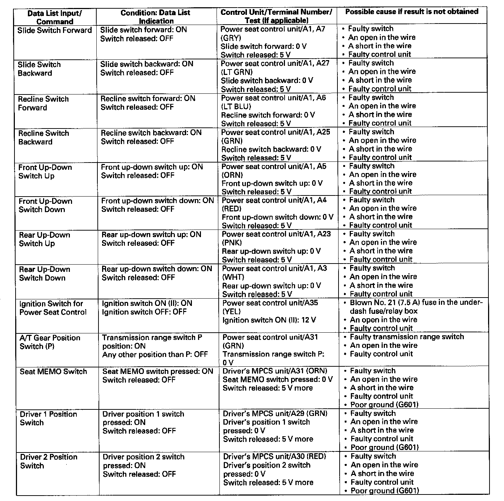
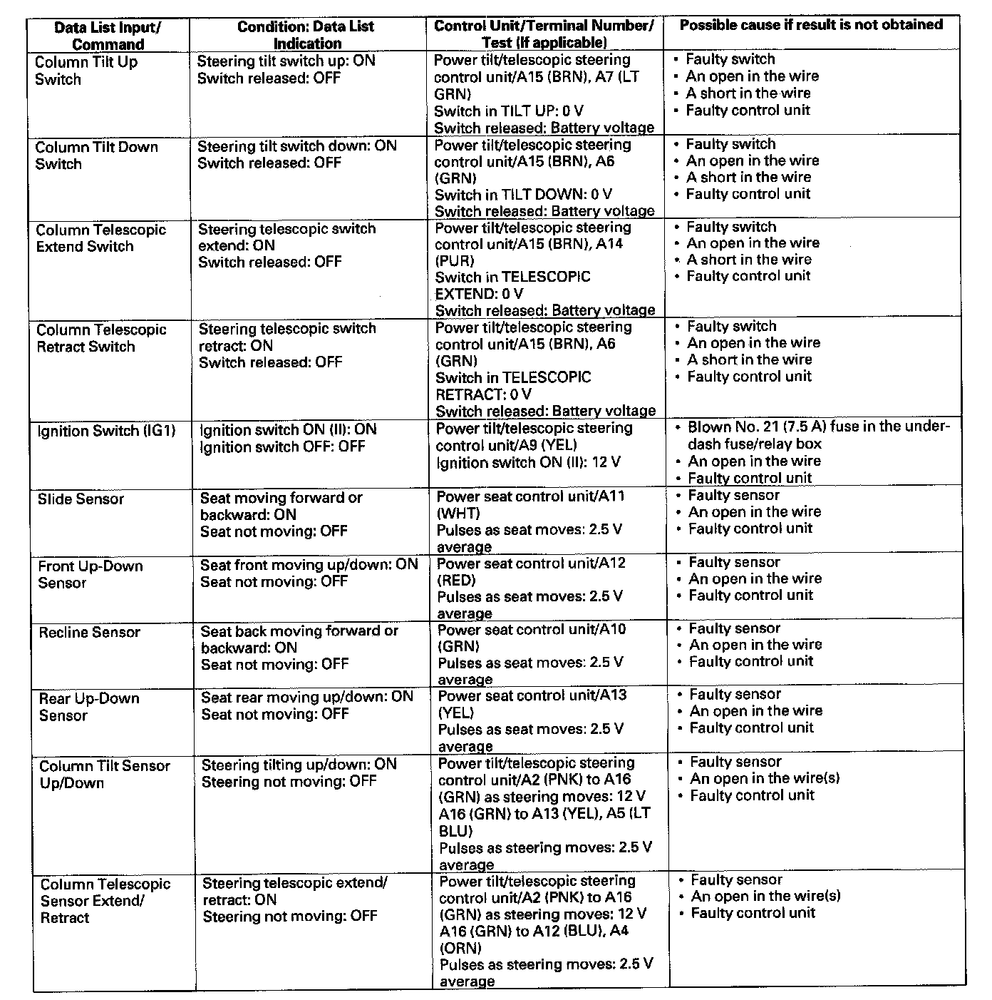
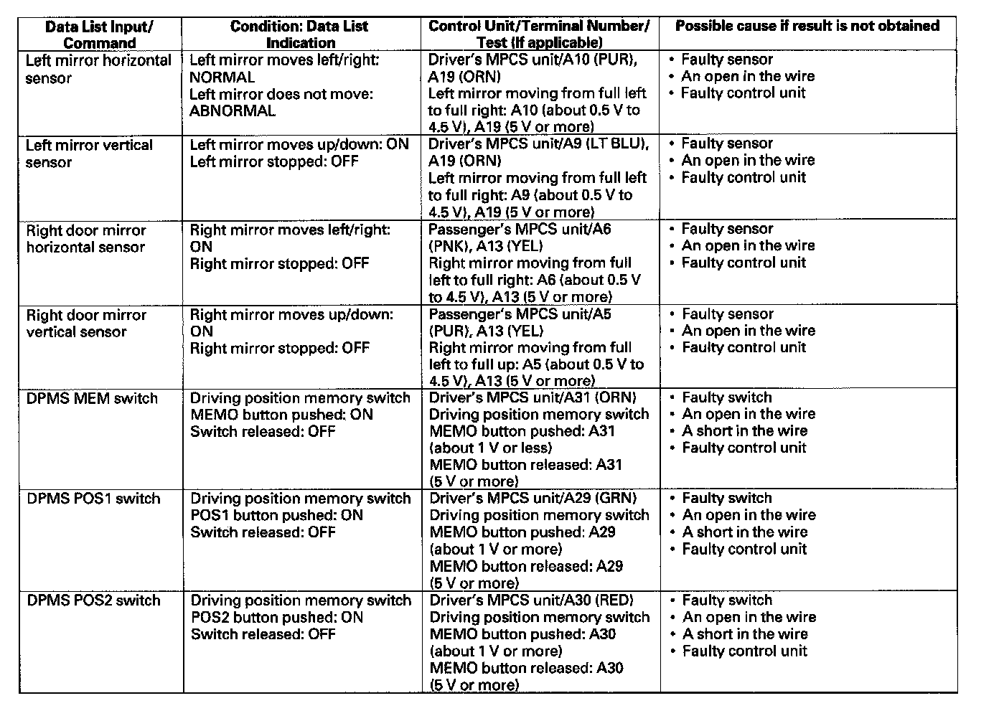
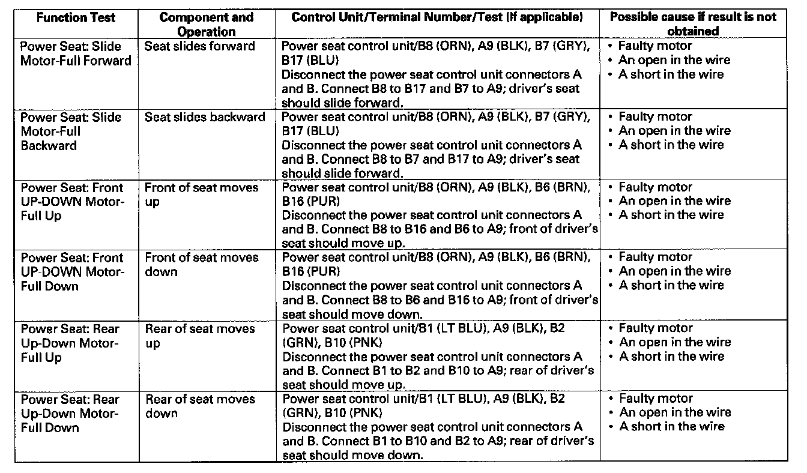
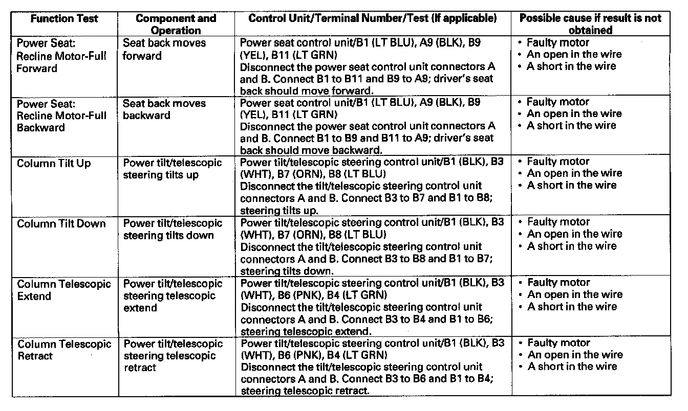

System Input Test and Function Test
System Input Test and Function Test1. Connect the HDS to the DLC.
2. Turn the ignition switch ON (II).
3. From the BODY ELECTRICAL SYSTEM SELECTION menu, select POWER SEAT/POWER MIRROR, then DTCs.
- If DTCs are found, troubleshoot the DTCs using B-CAN System Diagnosis Test Mode A.
- If no DTCs are found, go to step 4.
4. Exit the DTC mode, and select DATA LIST from the POWER SEAT/POWER MIRROR TEST MODE MENU.




5. Test each input and monitor each output under the condition shown below:
- If the data list indication is correct, continue to the next switch. If all switches are OK, go to step 6.
- If the data list indication is not correct, do the appropriate test at the control unit and terminal indicated in the table.
- Voltage drop tests should be done with the ignition switch ON (II) and all connectors connected and the meter negative test lead attached to a good body ground, unless specified otherwise.
- Continuity tests should be done with the ignition switch OFF and indicated terminals disconnected.
6. Exit the DATA LIST and select FUNCTION TEST.


7. Do each of the function tests listed in the table shown. The appropriate output should occur.
- If the function operates normally, go to the next function test. If all function tests operate normally, the system is OK.
- If the function does not occur, do the appropriate test at the control unit and terminal indicated in the table.
- Voltage drop tests should be done with the ignition switch ON and all connectors connected.
- Continuity tests should be done with the ignition switch OFF and indicated terminals disconnected.
- Jumper tests should be done according to the instructions indicated.
- If the test indicates that the component operates normally, but the function will not operate by doing the function test or the normal use of the component, the control unit that operates that function must be faulty; replace it.
- If the test indicates that the component does not operate normally, check for an open or short in the harnesses between the component and the control unit. If the harness is OK, replace the component.